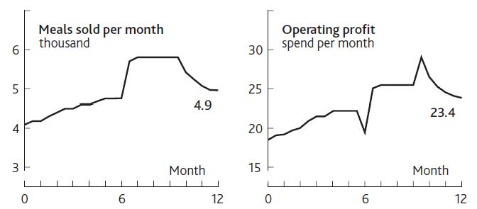

A simple example helps to explain how this process of understanding, predicting, and improving performance works in practice. We will start it here and develop it in later chapters.
You find yourself in charge of a restaurant in a medium-size town that gets most of its business from regular customers. You also win a few new customers from time to time, some of whom become regulars. You have had a frustrating time over the past 12 months, as Figure 1.4 "Restaurant Performance Example" shows.
As the year started, you were selling 4,000 meals per month and making profits of $18,000 per month. Business and profits increased slowly for a few months, then seemed to reach a limit, so in month 6 you carried out some marketing, hence the decrease in profits and the increase in meals sold. However, meals sold per month soon reached a new limit, so profits also plateaued. In the last months of the year, you cut your marketing spending, saving money and increasing profits sharply, but at the cost of a decrease in meals sold. This kind of account is what we mean by focusing on performance through time: We are not just concerned with static performance measures such as market share, profit margins, or return on capital.
Figure 1.4 Restaurant Performance Example
A particularly important reason for understanding performance through time is to put a value on firms. Essentially, investors hope to see a strong, increasing stream of “free cash flow”: the cash that is generated after reinvesting what is needed to deliver that growth. Free cash flowThe cash that is generated after reinvesting what is needed to deliver growth. is
Operating income + Depreciation – Tax payments + Nonoperating income – Net investments in current assets.Because investors prefer money sooner rather than later, the forecast free cash flows are discounted back to give a “present value,” whether for the firm as a whole or for an investment it intends to make. How these measures are calculated and the method of valuation are explained in detail elsewhere (Copeland, Koller, & Murrin, 2000), so from now on we will simply discuss earnings, profits, or operating income. We will assume that finance professionals can do the necessary translation into the correct financial measures.
The methods used by the finance and investment communities to assess the value of firms and their strategic initiatives are exceedingly rigorous and analytical. Regrettably, though, this rigor is applied to flawed models of how businesses function and speculative estimates of the future. It is during the forecasting stage that financial evaluations lose touch with a firm’s strategic reality. A typical approach is to estimate sales growth (on the basis of industry forecasts) and project cost ratios and profit margins (on the basis of assumptions about efficiency improvements). As we will see, there are dynamics at work within organizations that make such approaches to projecting performance highly unreliable.
A sound time path of past and future performance describing the challenge your organization is facing is an essential starting point. It highlights how the future might play out if resources and events continue to develop along their current path. Time paths are not forecasts, and there is little to be gained by trying to get them right. Rather, they describe how the future could turn out if things go well or badly.
Time paths provide clarity, helping to shed light on important and complex issues by showing where the current situation may lead and what impact may follow from specific decisions.
Here are some tips for preparing a performance time path: